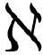

.ω 行胜于言数学：这样好多了。就像我说的。你每一章都在抱怨“数学教科书”和“数学课程”。
读者：但你直到第3章才出现——
数学：不要光耍嘴皮子！你把我们写进了各种场景，除了那些你似乎最关心变化的地方。我遇到了人格化的计算机，令人紧张的沉默的元实体，还有什么证明酒吧，而我却还没见到有哪个数学教室在大量制造对我的误解！数学教育是那么的不如意，帮倒忙，我们干嘛不停止闲逛做些什么？
作者：我……好吧……我的意思是，我写这本书就已经帮了一点——
数学：别找借口了！如果你不做，我去做！
（数学猛地拉着角色们离开了这一章进入下一章。）